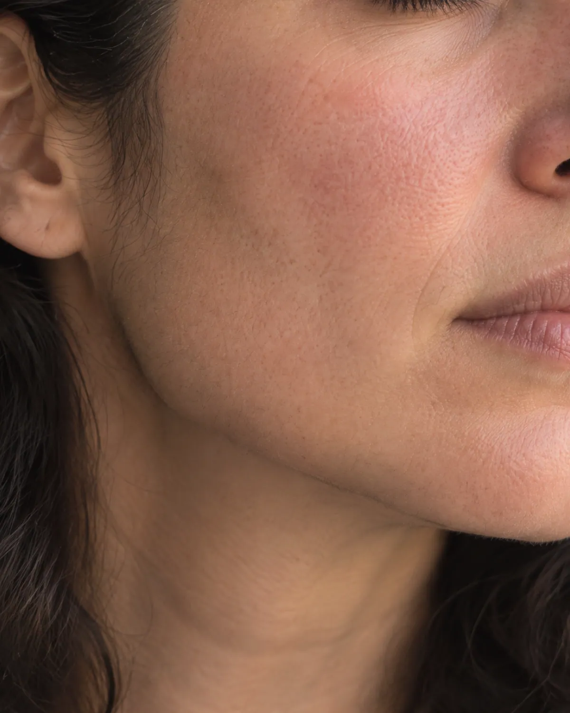
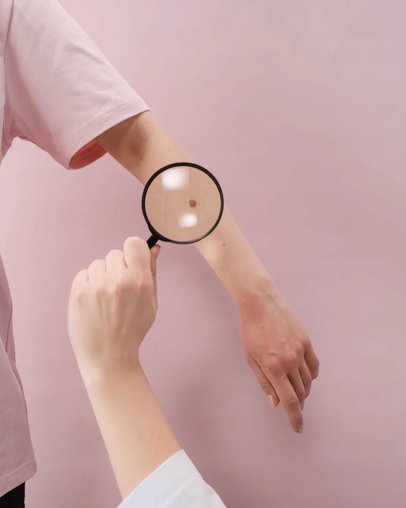
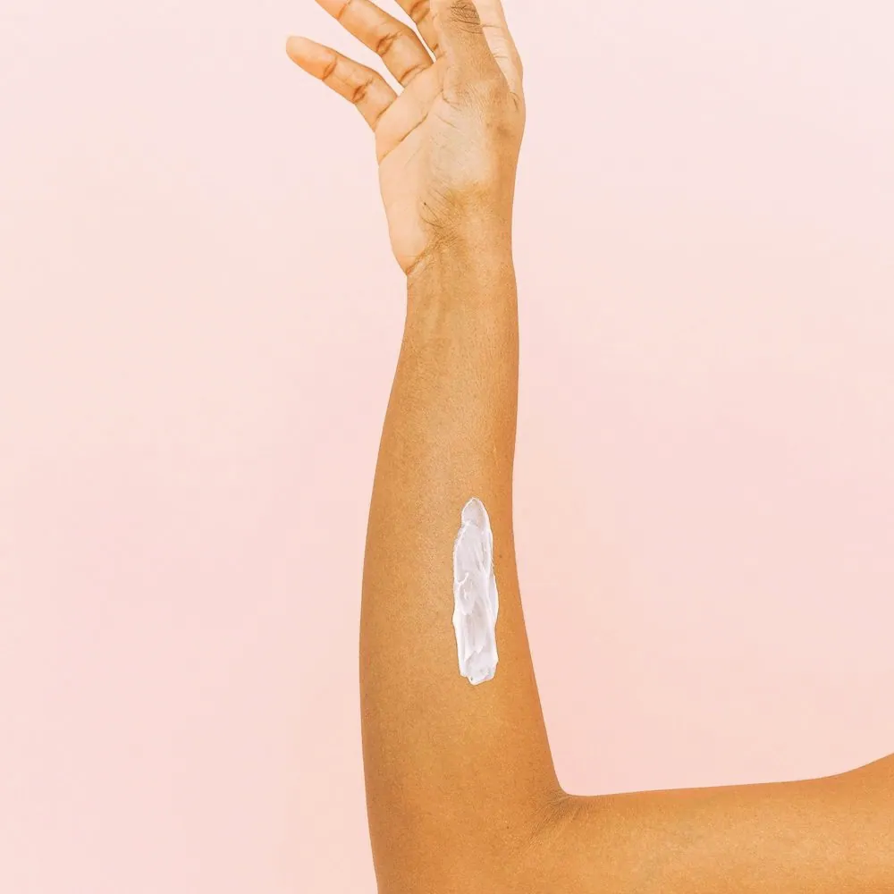

Medical
A skin concern
Skin checks, medical dermatology and follow-up.
Sample hours · Mon–Fri 8–6 · Sat 9–1

Call or book
A real Solenne Skin number and booking link go here. This demo doesn’t place calls or book visits.
Say which kind of visit you want first: “a medical visit about a spot” or “a cosmetic consultation only”.
For the clinic · 01
Two lanes from the first screen, each with its own booking button. Nadia, the persona, sees “a spot that’s changed” before anything cosmetic, so a medical visitor is never dropped into a sales page. Choosing a door in the bar above changes the page itself: that lane widens, the other half of the headline fades, and the other door’s section further down is set aside until it is asked for.

Medical
Skin checks, medical dermatology and follow-up.
Cosmetic
Options, suitability, downtime and a written estimate.
For the clinic · 02
The promise Nadia needs before she books: a medical visit will not turn into a pitch. It doubles as the rule for every ad and post the practice runs.
How we work
For the clinic · 03
The condition index answers “do they treat this?” in one tap, and every item lands on the right care page. It is also the list the footer repeats, so search engines and patients see the same words.
Conditions

Changing moles
A spot that is new, growing or changing colour.
Start with a skin check: a head-to-toe exam, and a sample only if it’s needed.
Read moreRosacea
Flushing, redness or bumps across the cheeks and nose, often worse in winter.
Plans are reviewed over weeks, not days. Bring what you’ve tried.
Read moreAcne, at any age
Breakouts in your teens, twenties or forties.
Bring every product you’ve used: the history matters as much as the skin.
Read moreEczema and dermatitis
Dry, itchy or inflamed patches, sometimes after a product.
Note what you touched or changed in the days before.
Read more
Psoriasis
Raised, scaly patches that come and go.
Long-term plans are reviewed regularly; the review visit has its own page.
Read moreHair, scalp and nails
Thinning, shedding, flaking or a change in a nail.
Dated photos over a few months help more than one on the day.
Read moreRashes and reactions
Something new after a product, a medication or a plant.
If you have swelling or trouble breathing, call 911.
Read moreFor the clinic · 04
Cosmetic care gets its own tint and its own section, after the medical lane. Every tile says “by consultation”: no prices or “from” prices, which keeps the page inside health-ad rules and away from discount language.
Cosmetic
Start with a conversation about what you’d like to change. A written plan and estimate come before any decision.
For the clinic · 05
The four columns answer the new-patient questions that fill a dermatology phone line: referral, what to bring, whether a sample means extra cost, and who calls with results.
Your first visit
01
MedicalAsk for a medical visit and say what changed. Medical scheduling checks whether your plan needs a referral.
CosmeticAsk for a consultation only. The coordinator books a conversation, never a treatment.
02
MedicalBring your products, medications and any dated photos. Arrive ten minutes early for forms the practice gives you.
CosmeticBring your goal in your own words and a list of medications and past procedures.
03
MedicalA clinician listens, examines and explains. A sample is taken only if it’s needed, and you’ll hear who reads it.
CosmeticOptions, risks, downtime and limits, with time for your questions. Nothing is done on the day unless you ask.
04
MedicalYou leave with a plan or a review date, and the name of the team that calls with any results.
CosmeticYou leave with a written plan and estimate to take home. Decide on another day.
Not for urgent care. This fictional website cannot assess symptoms or connect you to care. For a medical emergency in the U.S., call 911. For personal health questions, contact a qualified care team.
For the clinic · 06
Roles with model portraits, labelled illustrative, until the practice supplies verified names and credentials. The line under the portrait is the one claim that is safe to make: who leads the visit.
Clinician-led
A clinician examines you, explains what they see and owns the plan. A real practice would name them here, with verified credentials.
For the clinic · 07
The location card carries what people otherwise phone to ask: hours, parking, transit and step-free access. Everything here is labelled sample until the practice verifies it.
Location · sample details
Fictional location. Confirm the address, access and hours with a real practice before you travel.
For the clinic · 08
The FAQ toggle is the site’s own door switch, so the medical answers never sit next to cosmetic ones. The referral and coverage answers point to the plan, not to a promise.
Questions
Medical
Some plans ask for one before a specialist visit. Check your plan, or ask medical scheduling to check when you book.
Plans usually treat evaluation of a changing spot as medical care, after your share of the cost. Only your plan can confirm it.
Not through this website. A real practice would offer an approved route for photos and say whether you need to come in.
Cosmetic
No. A consultation is a conversation, and treatment is a separate appointment if you want one.
Ask the coordinator when you book; the price would be given by phone and in writing. This concept lists no prices.
Yes. Many people bring a partner or friend to help with questions and the decision.